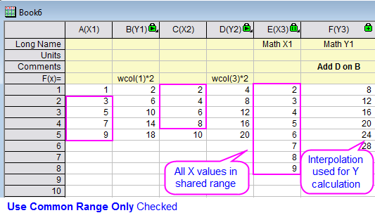
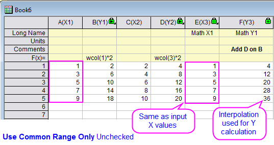
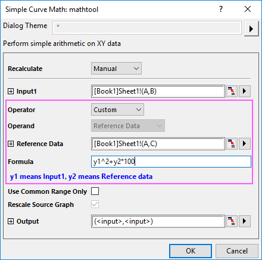

Einfache Spalten-/Kurvenmathematik
Math-SimpleColumnCurveMath
Beschreibung
Es gibt zwei Hilfsmittel der Bedienoberfläche, mit denen einfache mathematische Operationen auf Daten durchgeführt werden können: mathtool und vmathtool.
| Hilfsmittel der Bedienoberfläche |
Zugriff über |
Arithmetische Operationen |
| mathtool |
Analyse: Mathematik: Einfache Kurvenmathematik (bei aktivem Arbeitsblatt/Diagramm) |
Für eine Kurve oder XY-Datenbereich |
| vmathtool |
Analyse: Mathematik: Einfache Spaltenmathematik (bei aktivem Arbeitsblatt) |
Für eine einzelne Spalte |
Beide Hilfsmittel führen arithmetische Operationen auf Daten in Arbeitsblattspalten oder gezeichneten Kurven durch, die Eingabe und der Operand unterscheiden sich für beide Hilfsmittel.
Für vmathtool sind die Eingabedaten eine einzelne Spalte und der Operand ist eine einzelne Spalte oder Konstante. Die mathematische Operation wird zwischen der Eingabespalte und der Spalte des Operands bzw. Konstanten durchgeführt.
Für mathtool sind die Eingabedaten ein XY-Bereich (oder -Kurve) und der Operand ist auch ein XY-Bereich (oder -Kurve) bzw. Konstante. Die mathematische Operation wird zwischen der Y-Eingabespalte und der Y-Referenzspalte bzw. Konstanten durchgeführt. Es gibt drei Fälle für den X-Bereich:
- Wenn der X-Bereich für das X der Eingabe und der Referenz identisch ist, werden die Operationen auf den entsprechenden Y-Bereich direkt für Eingabe und Referenz durchgeführt.
- Wenn der X-Bereich für die Eingabe und Referenz unterschiedlich ist, werden die Operationen auf den entsprechenden Y-Bereich für Eingabe und Referenz nach der Interpolation bzw. Extrapolation des XY-Bereichs durchgeführt. Zusätzlich:
-
- Wenn die Option Nur gemeinsamen Bereich verwenden aktiviert wurde, bestehen die X-Werte im Ergebnis aus allen X-Werten den gemeinsamen Bereichs, während die entsprechenden Y-Werte nach der Interpolation (Extrapolation) berechnet werden.
- 
-
- Wenn die Option Nur gemeinsamen Bereich verwenden aktiviert wurde, sind die X-Werte im Ergebnis die gleichen wie die X-Eingabewerte, während die entsprechenden Y-Werte nach der Interpolation (Extrapolation) berechnet werden.
- 
Ausführliche Informationen, einschließlich die Programmierung betreffende Informationen, finden Sie in der Referenz der X-Funktion: vmathtool und mathtool.
 |
Seit Origin 2020 können Sie eine einfache Formel verwenden, um einfache Mathematik auf Spalten oder Kurven durchzuführen.
Um eine Formel auf den Eingabebereich und einen Referenzdatensatz anzuwenden, müssen Sie zuerst Operator auf Benutzerdefiniert setzen. Der Operand wird auf Referenzdaten festgelegt. Sie können dann eine Referenzspalte und auswählen und eine einfache Formel, wie unten, eingeben:
- 
Bitte beachten Sie, dass das Feld Formel zurzeit nur arithmetische Operationen mit allgemeinen Operatoren akzeptiert und keine LabTalk-Funktionen wie mean oder sqrt unterstützt.
Für das Hilfsmittel vmathtool sind x1 die Eingabedaten und x2 die Referenzdaten.
|
Dialogoptionen
| Neu berechnen |
Bedienelemente zur Neuberechnung der Analyseergebnisse
Weitere Informationen finden Sie unter Analyseergebnisse neu berechnen.
|
| Eingabe |
XY-Eingabedatenbereich oder -kurve
Hilfe zum Festlegen von Bereichen finden Sie hier: Eingabedaten festlegen
|
| Operator |
Legen Sie einen Operator fest: Addieren, Subtrahieren, Teilen, Multiplizieren oder Potenz.
Seit Origin 2020 ist ein weiteres optionales Element Benutzerdefiniert in dieser Auswahlliste verfügbar, um Anwendern die Möglichkeit zu geben, eine Formel für die Durchführung einfacher Mathematik auf Spalten und Kurven einzugeben.
|
| Operand |
-
Konstante
- Verwendet eine Konstante als Operand.
-
Referenzdaten
- Verwendet eine Referenzkurve oder Spalte als Operand.
Falls der Operator Benutzerdefiniert ist, wird diese Option des Operanden per Standard auf Referenzdaten gesetzt und ist unveränderbar.
|
| Referenzdaten |
Legt eine Kurve (XY-Bereich) oder Spalte als Operand fest. Diese Option ist verfügbar, wenn Operand = Referenzdaten. Wenn zwei Kurvenbereiche sich nicht überschneiden, werden die zwei Kurven mit der linearen interpolation interpoliert oder extrapoliert, bevor die festgelegte Operation durchgeführt wird.
|
| Konstante |
Legt eine Konstante als Operand fest. Diese Option ist verfügbar, wenn Operand = Konstante.
|
| Formel |
Geben Sie eine einfache Formel mit allgemeinen arithmetischen Operatoren ein, um einfache Mathematik auf Spalten und Kurven durchzuführen. Diese Option ist nur verfügbar, wenn der Operator auf Benutzerdefiniert gesetzt ist.
Bitte beachten Sie, dass die mathematischen Funktionen von LabTalk zurzeit nicht in diesem Formelfeld unterstützt werden. Für das Hilfsmittel mathtool steht y1 für die Eingabedaten und y2 für die Referenzdaten; für das Hilfsmittel vmathtool ist x1 die Eingabedaten und x2 die Referenzdaten.
|
| Nur gemeinsamen Bereich verwenden (nur mathtool) |
Die Operation wird auf den gemeinsamen Bereich zwischen den zwei Kurven (oder XY-Bereichen) verwendet. Dieses Kontrollkästchen ist verfügbar, wenn Operand = Referenzdaten.
|
| Quelldiagramm neu skalieren (nur mathtool) |
Das Quelldiagramm wird ggf. neu skaliert, nachdem die Berechnungen beendet wurden.
|
| Ausgabe |
Legen Sie den Ausgabedatenbereich fest.
Hilfe zum Festlegen der Bereiche finden Sie unter: Ergebnisse ausgeben
|